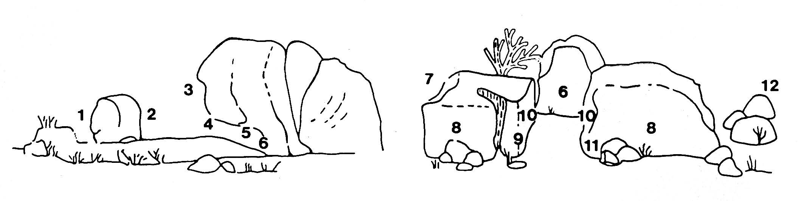
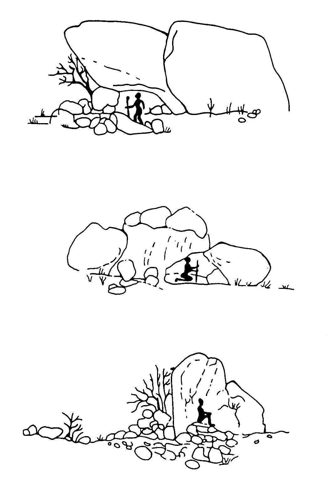

This database comprises data compiled according to two major considerations, namely, the topographic situation, and, in the broadest sense, features from social contexts. Among the latter are the facilities for group activities or the kind of 'living quality' the site offers.
SITE: Lists the site codes in the order used in the publications (PAGER 1989–2006).
SITE NICKNAME: Some of the most prominent sites have commonly used names. These "nicknames" can be derived from unique paintings.
DATE OF DISCOVERY: Known date of the first discovery.
NUMBER OF FIGURES: Absolute number of figures in the respective site.
DISTANCE TO NEXT SITE: Lists the geographic distance to the next site in meters.
CARDINAL POINTS: Indicates the direction of the main outlet of the site. Some sites have several equally large openings so that several directions are noted. Directions are marked in eight steps
PAINTING LOCATION: Gives account of the schematic placing of the paintings on the rock, i.e. which parts of the 'architecture' of the sites were used for painting [ill. 1]. For example, the vast majority of paintings is painted on the ceiling (painting location No. 5) while only very few are painted on the left flank of the entrance (painting location No. 9).
OPEN FIELD: Marks the presence of an open level plain of at least 10 x 10 m, permitting the performance of social activities that require such space, e.g. dancing or playing. Addtional information has been recorded on the visibility of a given open field from the site (OPEN FIELD IN SIGHT = true).
CONTEXT: Indicates the position of a site within a group of sites. This concept of groups is dependent on a topographical link between the sites, such as a plain, a basin or a valley.
VIEW FROM SITE: Indicates whether sight from the site is topographically limited or open in three categories.
DEGRADATION OF PAINTINGS: Lists visible influences the paintings have been exposed to.
QUANTITY OF ARTEFACTS In the early stage of field recording ARTEFACTS were recorded by estimating the overall quantity of artefacts at the site. In the later stages artefacts were recorded by estimating the amount per LITHICS, POTTERY, O.E.S. (ostrich eggshell), BONE, CHARCOAL, GRINDING IMPLEMENTS, STRONE STRUCTURES and MISCELLENOUS ARTEFACT on site in five corresponding categories.
EVIDENCE OF HUMAN OCCUPATION: Gives information about earlier visitors, derived from artefacts to be found at the site.
GORGE: The complete names of the corresponding gorge.
DISCOVERER: Lists the person who is known to be the first visitor in recent times.
PUBLICATION: Specific volume referring to the site (PAGER 1989–2006).
NUMBER OF FIGURES CATEGORY: Files the categorized ranking of the number of figures on a scale from 1–6 (LENSSEN-ERZ 2001, 271–275).
NEXT SITE: The code of the geographically nearest site.
SPATIALITY: Indicates the number of adults who could ideally stretch out under the shelter of the overhanging rock irrespective of evenness of ground.
WATER AVAILABILITY: Regarding the topographic situation, observations were recorded on whether water is accessible within a few minutes' walk. Addtional information has been recorded on the visibility of a given water source from the site (WATER IN SIGHT = true).
VISIBILITY: Shows in four classes how close one has to get to the site to first recognize the paintings. At some sites there is a striking discordance, e.g., between the inconspicuousness of the rock formation and the exposure of the paintings (e.g. H 91, PAGER 1993) being particularly well visible.
LIVING PLACE: Categorization for the 'quality of living' of a rockshelter [ill. 2]. A “spacious” shelter has a more or less flat, level floor and is high enough for a person 170 cm tall to stand upright under the roof. An “unfavourable” shelter is a place with an uneven, inclined floor and/or a place where standing up inside is impossible. “±vertical rock” is a boulder which has no overhang that could shelter a person.
